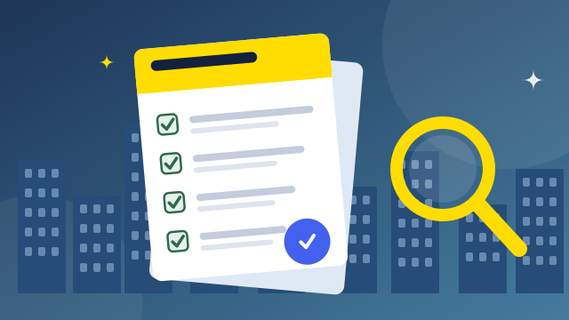
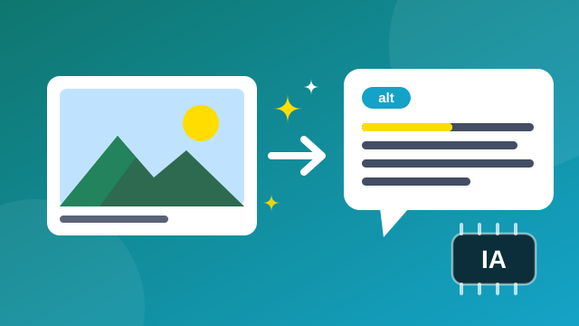
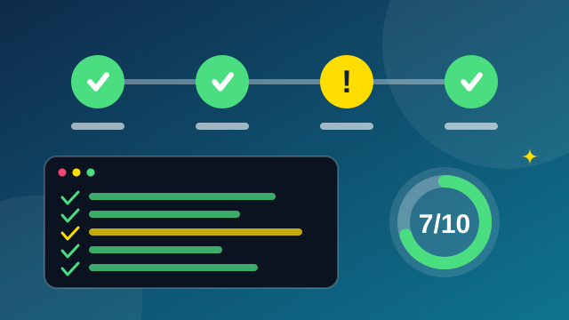
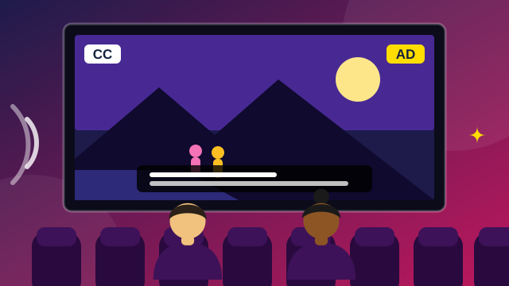

Leitores de tela ganham suporte nativo
Nova versão melhora a leitura de tabelas e formulários e passa a anunciar mudanças dinâmicas na página sem que o usuário precise navegar até elas.
Sexta-feira, 30 de outubro de 2026 · Atualizado às 09h40
Publicado em por Redação TechInclusiva
Especialistas de vários países debateram como a WCAG 2.1 pode ser aplicada nas redações digitais e quais ferramentas ajudam a encontrar barreiras logo no desenvolvimento. Durante três dias, mais de 1.200 participantes acompanharam painéis, oficinas práticas e demonstrações de tecnologias assistivas, todos com legendas ao vivo e interpretação em Libras.
Ler matéria completaNova versão melhora a leitura de tabelas e formulários e passa a anunciar mudanças dinâmicas na página sem que o usuário precise navegar até elas.

Programa distribui equipamentos com teclas ampliadas e alto contraste para estudantes com deficiência motora ou baixa visão em 120 escolas da rede pública.

Política
Texto exige conformidade com a WCAG 2.1 nível AA em portais e aplicativos de órgãos públicos e prevê relatórios anuais de acessibilidade.

Política
Representantes da comunidade surda pediram intérpretes em vídeo, janelas de Libras em transmissões oficiais e atendimento digital em língua de sinais.

Política
Material reúne cláusulas-modelo para licitações e um checklist de testes para que cidades de qualquer porte exijam acessibilidade de seus fornecedores.

Tecnologia
Testes mostram avanço na identificação de objetos e cenas, mas erros de contexto ainda exigem que editores revisem o texto alternativo antes de publicar.

Tecnologia
Mudança deve reduzir um dos problemas mais comuns da web: páginas que escondem o contorno que mostra onde o usuário está ao navegar com a tecla Tab.

Tecnologia
Levantamento com 300 equipes de produto indica que ferramentas como o axe-core entram cada vez mais cedo no desenvolvimento, mas a revisão manual continua indispensável.

Esportes
A competição liberou controles adaptáveis, legendas em tempo real e modo de alto contraste. A Equipe Alfa lidera a tabela com 42 pontos.

Esportes
Mais de 4 mil estudantes vão disputar provas de atletismo, natação e bocha. A organização ampliou o transporte adaptado e as equipes de apoio.

Esportes
Narradores vão descrever posicionamento, jogadas e placar para o público com deficiência visual, e a arquibancada terá áreas sinalizadas com piso tátil.

Cultura
Os roteiros incluem réplicas táteis, legendas em braille e guias treinados. As visitas acontecem aos sábados e podem ser agendadas pelo site.

Cultura
As sessões terão legendas descritivas para pessoas surdas e ensurdecidas, audiodescrição por aplicativo e espaço reservado para cadeiras de rodas.

Cultura
O acervo reúne obras em braille, audiolivros e e-books compatíveis com leitores de tela, e conta com monitores para ajudar no empréstimo.
Matéria completa
A terceira edição da Conferência Global de Acessibilidade Digital terminou nesta sexta-feira (30) com um recado direto às redações: acessibilidade não é uma etapa final, é requisito de projeto. Ao longo de três dias, mais de 1.200 participantes de 40 países acompanharam painéis, oficinas e demonstrações de tecnologias assistivas.
Na palestra de abertura, a coordenadora de um laboratório de interfaces inclusivas apresentou um estudo em que mais de 90% das páginas analisadas tinham ao menos uma barreira detectável por ferramentas automáticas, como imagens sem texto alternativo, contraste insuficiente e formulários sem rótulo.
Acessibilidade não é um recurso extra: é o que garante que a notícia chegue a todas as pessoas.
Os debates também trataram da aplicação da WCAG 2.1 no dia a dia das redações. A recomendação foi combinar testes automatizados, que encontram falhas repetitivas com rapidez, e verificações manuais, como navegar só pelo teclado e testar com leitores de tela, que revelam problemas de uso real.
Uma das oficinas mais concorridas mostrou como integrar o axe-core ao processo de desenvolvimento para que cada alteração no código seja auditada automaticamente, com relatórios que classificam as falhas por severidade e indicam o critério da WCAG violado.
Todas as sessões tiveram legendas ao vivo e interpretação em Libras, e a transmissão ficará disponível com transcrição completa. A próxima edição já tem data marcada: outubro de 2027.
A WCAG 2.1, das Diretrizes de Acessibilidade para Conteúdo Web, organiza-se em quatro princípios e três níveis de conformidade (A, AA e AAA). O nível AA costuma ser a referência para sites de notícias e serviços públicos.
A informação precisa chegar por mais de um canal: texto alternativo em imagens, legendas em vídeos e contraste suficiente entre texto e fundo.
Tudo deve funcionar só com o teclado, dar tempo suficiente para a leitura e evitar conteúdo que possa provocar convulsões.
Textos legíveis, comportamento previsível e ajuda para evitar e corrigir erros, principalmente em formulários.
O conteúdo deve funcionar em diferentes navegadores e tecnologias assistivas, com HTML semântico e uso correto de ARIA.
Repórter: Hoje mostramos como equipes de redação estão incluindo testes de acessibilidade no dia a dia.
[Imagens de uma redação e de uma pessoa navegando apenas com o teclado.]
Repórter: Em vez de deixar a revisão para o fim, os times rodam verificações a cada alteração no código.
Editora de produto: As ferramentas encontram falhas repetitivas, como imagens sem texto alternativo. Já o teste manual mostra como é a experiência real de quem usa leitor de tela.
Repórter: Combinar as duas abordagens é o caminho para que a notícia chegue a todas as pessoas.
Aviso: o conteúdo desta página é atualizado ao longo do dia. Recarregue para ver as últimas notícias.
| Equipe | Jogos | Vitórias | Pontos |
|---|---|---|---|
| Equipe Alfa | 14 | 14 | 42 |
| Equipe Beta | 14 | 12 | 37 |
| Equipe Gama | 14 | 10 | 33 |
| Equipe Delta | 14 | 8 | 29 |
| Equipe Ômega | 14 | 7 | 24 |
| Equipe Sigma | 14 | 5 | 18 |